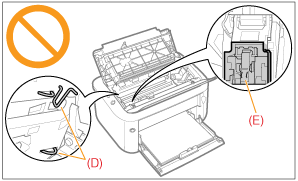

|
Siehe auch "Wichtige Sicherheitsvorschriften" und "Lagern der Tonerpatronen".
|
|
WICHTIG
|
||||
|
Informationen zu Ersatztonerpatronen
Für eine optimale Druckqualität wird empfohlen, bei einer Auswechselung der Tonerpatrone die Original-Canon-Tonerpatrone zu verwenden.
Vorsicht vor gefälschten Tonerpatronen.
Wir weisen Sie darauf hin, dass gefälschte Canon-Tonerpatronen auf dem Markt sind.
Wenn Sie gefälschte Tonerpatronen verwenden, kann darunter die Druckqualität und die Leistung des Systems leiden.
Canon ist nicht für irgendwelche Fehlfunktionen, Unfälle oder Schäden verantwortlich, die durch die Verwendung von gefälschten Tonerpatronen verursacht werden.
Nähere Informationen finden Sie unter http://www.canon.com/counterfeit.
Halten Sie die Tonerpatrone richtig.
Halten Sie die Tonerpatrone mit der Seite, auf der der Pfeil abgebildet ist, nach oben, wie in der Abbildung dargestellt. Setzen Sie sie nicht vertikal oder mit ihrer Oberseite nach unten ab.
 Berühren Sie nicht die elektrischen Kontakte (A) des Tonerpatronenspeichers (B), und öffnen Sie nicht die Schutzabdeckung der Trommel (C).
Wenn Sie die elektrischen Kontakte (A) des Tonerpatronenspeichers (B) berühren, kann die Patrone beschädigt werden.
Darüber hinaus kann sich die Druckqualität verschlechtern, wenn Sie die lichtempfindliche Trommel im Inneren der Tonerpatrone berühren oder beschädigen. Berühren oder öffnen Sie nicht die Schutzabdeckung der Trommel (C).
  Berühren Sie nicht die Hochspannungskontakte (D) oder die elektrischen Kontakte (E).
Andernfalls kann es zur Beschädigung der Patrone kommen.

Weitere Vorsichtsmaßnahmen
Setzen Sie die Tonerpatrone nicht direktem Sonnenlicht oder starkem Licht aus.
Versuchen Sie nicht, die Tonerpatrone zu zerlegen oder zu modifizieren.
Wenn eine Tonerpatrone in eine Umgebung gebracht wird, deren Temperatur oder Luftfeuchtigkeit von der vorherigen Umgebung stark abweicht, kann sich Kondenswasser (Wassertröpfchen) an den Innen- oder Außenseiten der Tonerpatrone bilden.
Wenn eine neue Tonerpatrone an einen Ort mit einer anderen Temperatur gebracht wird, lassen Sie die Tonerpatrone in der Schutzhülle am neuen Ort mindestens zwei Stunden lang liegen, sodass sie sich an die neue Temperatur gewöhnen kann. Lassen Sie die obere Abdeckung bei eingesetzter Tonerpatrone nicht über einen längeren Zeitraum geöffnet.
Halten Sie die Tonerpatrone fern von Produkten, die magnetische Wellen erzeugen, wie Computer oder Computer-Monitore.
Eine Tonerpatrone ist ein magnetisches Produkt. Halten Sie die Tonerpatrone fern von Produkten, die durch Magnetismus beschädigt werden können, wie Magnetdisketten oder Diskettenlaufwerke. Andernfalls kann es zur Beschädigung der Daten kommen.
|
|
HINWEIS
|
|
Informationen zum Verpackungsmaterial
Die Form oder Position des Verpackungsmaterials kann geändert und Verpackungsmaterial ohne Ankündigung hinzugefügt oder entfernt werden.
|